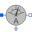
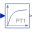
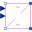

DcdcInverterDC-DC inverter |
Diagram
{kind=link}
Information
This information is part of the Modelica Standard Library maintained by the Modelica Association.
This is a model of a DC-DC inverter. The level of detail of the DC-DC inverter may be chosen from ideal averaging or switching.
Reference voltage is limited to actual battery voltage.
Battery voltage and motor current are measured.
Parameters (12)
| useIdealInverter |
Value: true Type: Boolean Description: Use ideal averaging inverter, otherwise switching inverter |
|---|---|
| fS |
Value: Type: Frequency (Hz) Description: Switching frequency |
| Td |
Value: 0.5 / fS Type: Time (s) Description: Dead time |
| Tmf |
Value: 2 / fS Type: Time (s) Description: Measurement filter time constant |
| VMax |
Value: Type: Voltage (V) Description: Maximum Voltage |
| Ti |
Value: 1e-6 Type: Time (s) Description: Time constant of integral power controller |
| RonT |
Value: 1e-05 Type: Resistance (Ω) Description: Transistor closed resistance |
| GoffT |
Value: 1e-05 Type: Conductance (S) Description: Transistor opened conductance |
| VkneeT |
Value: 0 Type: Voltage (V) Description: Transistor threshold voltage |
| RonD |
Value: 1e-05 Type: Resistance (Ω) Description: Diode closed resistance |
| GoffD |
Value: 1e-05 Type: Conductance (S) Description: Diode opened conductance |
| VkneeD |
Value: 0 Type: Voltage (V) Description: Diode threshold voltage |
Outputs (2)
Connectors (9)
| pin_pBat |
Type: PositivePin |
|
|---|---|---|
| pin_nBat |
Type: NegativePin |
|
| pin_pMot |
Type: PositivePin |
|
| pin_nMot |
Type: NegativePin |
|
| vRef |
Type: RealInput |
|
| vDC |
Type: RealOutput |
|
| iDC |
Type: RealOutput |
|
| vMot |
Type: RealOutput |
|
| iMot |
Type: RealOutput |
Components (12)
| vDCSensor |
Type: VoltageSensor |
|
|---|---|---|
|  | iMotSensor |
Type: CurrentSensor |
| variableLimiter |
Type: VariableLimiter |
|
| gain |
Type: Gain |
|
|  | vDCFilter |
Type: FirstOrder |
| iMotFilter |
Type: FirstOrder |
|
| idealDcDc |
Type: IdealDcDc |
|
|  | switchingDcDc |
Type: SwitchingDcDc |
| iDCSensor |
Type: CurrentSensor |
|
| vMotSensor |
Type: VoltageSensor |
|
| vMotFilter |
Type: FirstOrder |
|
| iDCFilter |
Type: FirstOrder |
Used in Components (1)
|
Modelica.Electrical.Machines.Examples.ControlledDCDrives.Utilities
Partial controlled DC PM drive with H-bridge from battery |